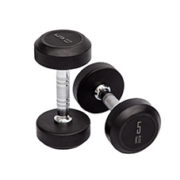

MATERIAL DEPORTIVO
LOS MEJORES ACCESORIOS PARA PODER HACER EJERCICIO LOS VAS A ENCONTRAR AQUÍ
PESAS Y MANCUERNAS
Las mancuerna es una de las piezas más famosas y conocidas en el mundo del deporte y del fitness. Se utilizan para entrenar con pesas, siendo un tipo de peso libre. Existen diferentes tipos, que se utilizan según las necesidades individuales y deportivas del usuario. Las mancuernas seleccionables o ajustables son aquellas en las que el peso se puede cambiar, lo que permite que se puedan incorporar discos para un mayor peso. El segundo tipo de mancuernas son las llamadas de peso fijo. Estas no permiten la incorporación de una mayor carga, por lo que la intensidad durante el ejercicio será constante. Las mancuernas son ideales para trabajar desde casa, ya que suelen ocupar muy poco espacio y las podemos encontrar de forma muy económica.
BARRAS Y DISCOS
Las barras son otro de los equipos de entrenamiento más vendidos y utilizados en el mundo. Diferentes disciplinas hacen uso de este material; desde la halterifilia, el levantamiento de potencias hasta el atletismo de fuerza. Este accesorio está compuesto, principalmente, por una barra de metal que permite la incorporación de pesos, que tienen forma de discos. El tamaño de las mismas suelen ser diferentes, oscilando los 1,2 metros y los 2,1. Podemos encontrar una gran variedad que se adaptan a todas las formas físicas; desde barras masculinas hasta femeninas. Pese a que las barras ocupan un mayor lugar dentro de casa, es un accesorio imprescindible para la rutina deportiva.
ACCESORIOS
Pese a su apariencia sencillez y poca utilidad, estos materiales se van a convertir en tu mejor aliado cuando practiques deporte. ¿Y cuál es lo mejor de todo? Su precio, ya que con muy poco dinero podrás hacerte con guantes, pelotas de movilidad, esterillas acolchadas y ruedas crosstraining. Los guantes evitarán que te lesiones y estropees las manos, gracias a su capacidad de protección y a su tela resistente. Además, la correa que incorpora te permitirá ajustarlos para que no te caigan y se adapten de la mejor forma. Otro de los materiales que no puede faltar en tu hogar en la esterilla acolchada. Con ella podrás realizar una infinidad de ejercicios, así como prácticas tan beneficiosas para tu salud como el yoga.